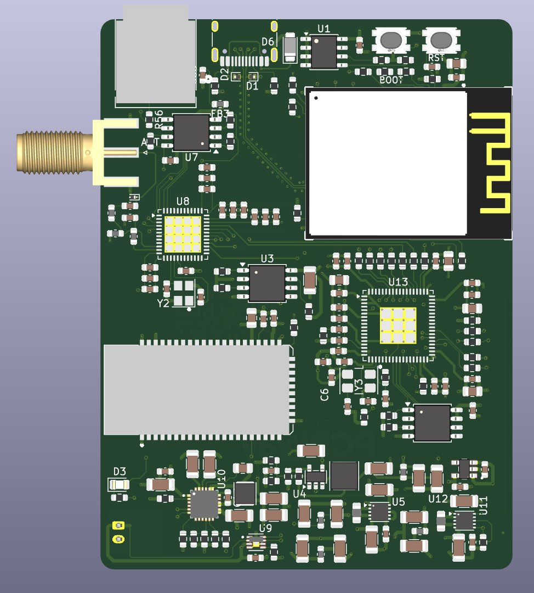

DigiRadio
An open-source DAB+ and FM radio that sends its audio to your Bluetooth headphones or speaker in aptX Adaptive, with a DSP in the middle and an iPhone and iPad app.


DigiRadio v2
It runs on a battery and has a much more powerful ADAU1452 DSP, the FSC-BT1058 Bluetooth module and an optical S/PDIF output. All on a 6-layer, 60 × 80 mm board.
Meet v2 →Why
I wanted a radio that receives DAB+ and FM and plays it on my own Bluetooth speaker or headphones with good quality, without going through a phone. Most DAB+ radios have their own small speaker, and the ones with Bluetooth usually receive it instead of transmitting it. So I designed my own.
How it works
The audio path is fully digital, I²S at 48 kHz and 24 bits: no conversions between the tuner and the Bluetooth link. The only DAC is the one in your headphones or speaker.
Radio
DAB+, DAB and FM with RDS, scrolling text, slideshow, alternate frequencies and band scan.
Web radio and phone
Web radio and your phone's audio over Wi-Fi go through the same DSP and out over Bluetooth.
Sound
Equaliser, audio presets, bass and stereo enhancement, computed by the ADAU1701 SigmaDSP.
Alarm clock
Alarms, sleep timer and a clock synced over the Internet.
Fully open
Schematic, PCB, bill of materials and firmware are public: hardware under CERN-OHL-S v2, firmware under Apache 2.0. On GitHub you'll find board v1 and board v2, which is also on PCBWay.